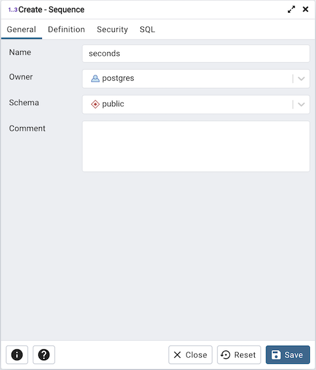
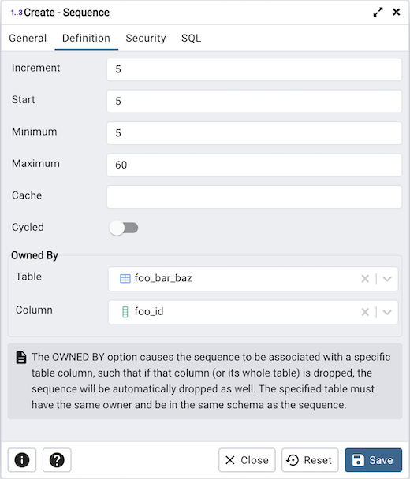
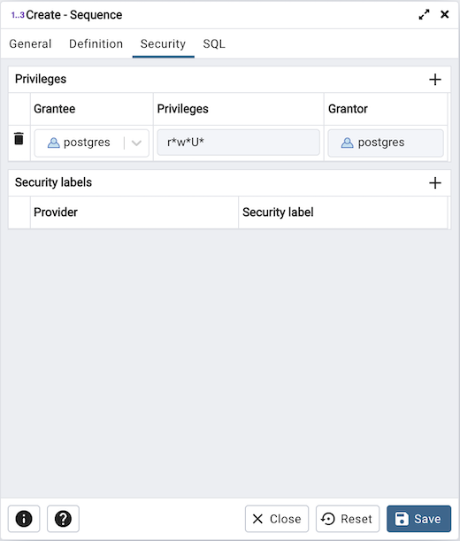
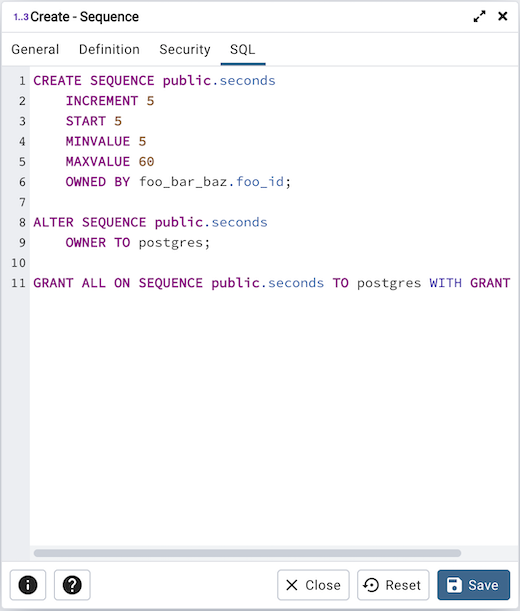

Sequence Dialog¶
Use the Sequence dialog to create a sequence. A sequence generates unique values in a sequential order (not necessarily contiguous).
The Sequence dialog organizes the development of a sequence through the following dialog tabs: General, Definition, and Security. The SQL tab displays the SQL code generated by dialog selections.
Use the fields in the General tab to identify a sequence:
Use the Name field to add a descriptive name for the sequence. The name will be displayed in the pgAdmin tree control. The sequence name must be distinct from the name of any other sequence, table, index, view, or foreign table in the same schema.
Use the drop-down listbox next to Owner to select the name of the role that will own the sequence.
Use the drop-down listbox next to Schema to select the schema in which the sequence will reside.
Store notes about the sequence in the Comment field.
Click the Definition tab to continue.
Use the fields in the Definition tab to define the sequence:
Use the Increment field to specify which value is added to the current sequence value to create a new value.
Provide a value in the Start field to specify the beginning value of the sequence. The default starting value is MINVALUE for ascending sequences and MAXVALUE for descending ones.
Provide a value in the Minimum field to specify the minimum value a sequence can generate. If this clause is not supplied or NO MINVALUE is specified, then defaults will be used. The defaults are 1 and -263-1 for ascending and descending sequences, respectively.
Provide a value in the Maximum field to specify the maximum value for the sequence. If this clause is not supplied or NO MAXVALUE is specified, then default values will be used. The defaults are 263-1 and -1 for ascending and descending sequences, respectively.
Provide a value in the Cache field to specify how many sequence numbers are to be preallocated and stored in memory for faster access. The minimum value is 1 (only one value can be generated at a time, i.e., no cache), and this is also the default.
Move the Cycled switch to the Yes position to allow the sequence to wrap around when the MAXVALUE or the MINVALUE has been reached by an ascending or descending sequence respectively. If the limit is reached, the next number generated will be the MINVALUE or MAXVALUE, respectively. The default is No.
The OWNED BY option causes the sequence to be associated with a specific table column, such that if that column (or its whole table) is dropped, the sequence will be automatically dropped as well. The specified table must have the same owner and be in the same schema as the sequence.
Click the Security tab to continue.
Use the Security tab to assign privileges and define security labels for the sequence.
Use the Privileges panel to assign privileges. Click the Add icon (+) to set privileges:
Select the name of a role that will be granted privileges from the drop-down listbox in the Grantee field.
Click inside the Privileges field. Check the boxes to the left of one or more privileges to grant the selected privilege to the specified user.
The current user, who is the default grantor for granting the privilege, is displayed in the Grantor field.
Click the Add icon (+) to assign additional privileges; to discard a privilege, click the trash icon to the left of the row and confirm deletion in the Delete Row popup.
Use the Security Labels panel to define security labels applied to the sequence. Click the Add icon (+) to add each security label selection:
Specify a security label provider in the Provider field. The named provider must be loaded and must consent to the proposed labeling operation.
Specify a a security label in the Security Label field. The meaning of a given label is at the discretion of the label provider. PostgreSQL places no restrictions on whether or how a label provider must interpret security labels; it merely provides a mechanism for storing them.
Click the Add icon (+) to assign additional security labels; to discard a security label, click the trash icon to the left of the row and confirm deletion in the Delete Row popup.
Click the SQL tab to continue.
Your entries in the Sequence dialog generate a generate a SQL command (see an example below). Use the SQL tab for review; revisit or switch tabs to make any changes to the SQL command.
Example¶
The following is an example of the sql command generated by user selections in the Sequence dialog:
The example shown demonstrates a sequence named seconds. The sequence will increase in 5 second increments, and stop when it reaches a maximum value equal of 60.
Click the Info button (i) to access online help.
Click the Save button to save work.
Click the Close button to exit without saving work.
Click the Reset button to restore configuration parameters.